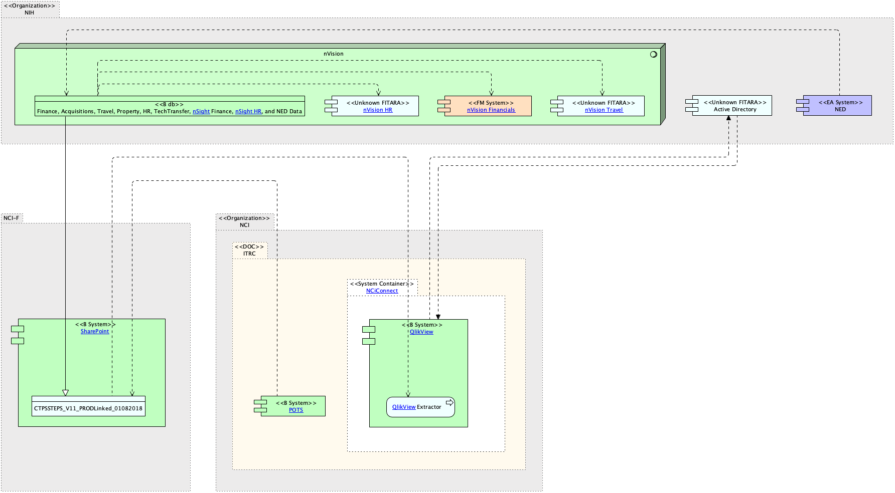

|
|
|
NCIConnect : Application Component (in HR Systems diagram / ITRC / Business Systems Archimate Diagram) . Conference Exemption Request Form : Application Component (in Conference Exemption Request Form ArchiMate Diagram / ITRC DOC-centric ArchiMate Diagram / NCI Business Applications Archimate Diagram / K2 ArchiMate Diagram / nVision ArchiMate Diagram / NCiConnect DOC-Centric ArchiMate Diagram) . STEPS Dashboard : Application Component (in NCI Conference Request Tool ArchiMate Diagram / Conference Exemption Request Form ArchiMate Diagram / ITRC DOC-centric ArchiMate Diagram / NCI Business Applications Archimate Diagram / STEPS Dashboard ArchiMate Diagram / QlikView ArchiMate Diagram / nVision ArchiMate Diagram / NCiConnect DOC-Centric ArchiMate Diagram / General NCI ArchiMate Diagram) . NCI-F : Grouping (in STEPS Dashboard ArchiMate Diagram / CTPS Dashboard ArchiMate Diagram / CTPS Exception ArchiMate Diagram / NCI-F DOC-centric ArchiMate Diagram / NCI Business Applications Archimate Diagram)
ArchiMate Diagram - NCI-F DOC-centric ArchiMate Diagram
 link
link
| Jump to: |
|  |
| Model Elements |
| Name | Description | ||
|
|
This is an Microsoft Access Database |
||
|
|
POTS
(POTS)
- is an electronic purchase request submission, approval, and
tracking system based on NIH
internal paper requistion of 1861 form.https://ccrod.cancer.gov/confluence/display/OMIT/POTS
1.
Search
Order – can search by POTS
ID, CAN, Requester Last Name, PA
Name, CCH Name, Vendor Name, FY,
Requestition Number, Order No, Catalog # NBS
Types, NBS Status
Creditcard Number, Custodial Code, Order Status,
sole Source Order, emergency Order, Order Type, Division and inactive
Divisions.
2.
Requester
– Tab to submit new orders, Search my Orders, Messages and
Reports. Reports is a FY
summary RePORT.
3.
Vendors
– Search list of vendors, my vendors and add a vendor
4.
NIANDS(Got
wrong) [SR([1] hosts,
Bob’s group supports.
[SR([1]Again
my handwriting fails me. |
||
|
|
|||
|
|
|||
|
|
The NED Portal/NED (NED) - is a centrally coordinated, electronic directory containing identity, contact, and organizational information for all members of the NIH workforce and non-NIH staff using NIH services and facilities. NEDWeb is the custom data content and process management Application used by NIH administrative personnel for adding new people to NED, updating existing records, transferring people between ICs, and deactivating people when they leave NIH. NEDWeb is also used for authorizing NIH "services" such as ID badges, Library privileges, Active Directory accounts, Exchange mailboxes, VPN Remote access, parking permits, and listing in the NIH Telephone and Services Directory. NEDWeb provides the following features and capabilities:
This document provides detailed information on the use of NEDWeb and is intended to serve as a reference guide for system users. Please direct comments or suggestions to ned@mail.NIH.gov.
System link - https://nedportal.NIH.gov/ProcessPortal/dashboards/NED/PIV+NED+Welcome+CS/NED_03_10_2017?isScoreboard=false
... |
||
|
|
|||
|
|
nVision Travel – Captures data for NIH staff travel and provides reports and dashboards.
Reports
Sources – not listed directly had to pull from reading. NBS, CGE, NED, ITAS, Fellows??, BIIS??
Notes - CGE, Fellows and BIIS not linked yet
|
||
|
|
nVision Financials – Consolidated and integrated financial reporting system which facilitates data-driven decision making. Offers valuable metrics and key performance indicators. Analysis and forecasting of costs budgeting, tracking obligations, accruals, disbursements for specific DOC, oversee funding movement and control, track spending for funding initiatives, track spending by object class code (travel, payroll)
Sources
|
||
|
|
nVision HR – Consolidated and integrated HR reporting. Facilitates data driven decision making. Create and share customized reports for FTE and non-FTE staff including personnel costs, FTE usage, aggregated workforce demographics, Status of personnel actions, fellowship costs and Status. NED tracking history movement within directory system from org to org. Provides Complete staff picture for each IC, develop custom reports, track all staff(contractors, FTEs Fellows), export to PDF, ability to create planning records to project future needs, dashboards and alerts.
Sources
|
||
|
|
Connections to database is provided by TNS connection rows a user is allowed to see is limited by VPD by there institute.
Contains:
HR data - Pay Biweekly, Demographics daily, Commission COR pay and FELLOWS is monthly
Finance data - is daily accept for commitments and obligation which is once an hour.
Travel - nightly
Property - nightly
Grant - nightly
NED - daily
Tech transfer - ?
Acquisitions - nightly.
FPS - is months
NOTES : Source data from POTS and AMBIS (acquisitions related). NBS only gets financial's from POTS. Approvals, and specifics(vendors quantity) are gotten directly from POTS.
AMBIS only used by MIAID NBS gets just enugh for a requisitions |
||
|
|
https://nvision.NIH.gov/nvision_registration/registration_guide.html#IntroductiontonVision
Contains
HR Data
nVision to K2 Process Script nVision data can be received by K2 by means of a K2 Process Script. |
||
|
|
|||
|
|
The QlikView Extractor is an automated daily process that reads data from nVision, Beacon, Sofie, Edie, SharePoint shared Directory), and builds tables in QlikView to store the data. The data can range from HR data, Budget, projections, commitments, obligations, SAC codes, ARC spendown, and SO forth. The Extractor has three parts in a shared drive:
1) ODBC/Excel extractor 2) Data Models 3) App Layer |
||
|
|
QlikView – COTs Application for business intelligence, data discovery and dashboards. IC-led effort to provide dynamic reporting of enterprise and IC-owned data that complements the suite of reporting tools already provided by nVision Data Warehouse and QVR. Can use data from ODBC(oracle,db2 sql server, access), QVDS,Excel, ACCESS, XML
Sources
|
||
|
|
|||
|
|
|||
|
|
|||